Joint Service Open House Airshow 2010
Click on thumbnail to enlarge.
Please press 'Back' on your browser to return to this page.
| 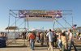 North Entrance |
 U-2S |
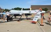 MQ-1 |
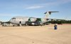 C-17A |
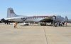 C-54E |
| 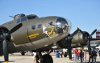 B-17F |
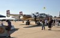 B-25J |
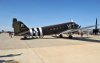 C-47A |
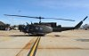 UH-1 |
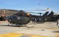 UH-72A |
| 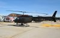 OH-58 |
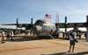 EC-130E |
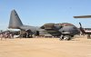 AC-130U |
 CH-46F |
 UH-34D |
 CH-53E |
 MV-22B |
 AV-8B |
 EA-6B |
 AH-1W |
 HH-60G |
 HC-130P |
 T-43A |
 KC-135R |
 C-12A |
 C-21A |
 C-38A |
 F-16C |
 C-40C |
 T-38A |
 KC-10A |
 Citation II |
 P-3B |
 HH-65C |
 HC-144A |
 NP-3D |
 T-6A |
 TH-57C |
 E-2C |
 EA-6B ICAP II |
 FA-18F |
 MH-60S |
 UC-12B |
 AD-4 |
 P-51D |
 P-47D |
 F-22A |
 FA-18F-54-MC |
 Blue Angels |